Course: Personal Training Certification
Topic: Fitness testing, part 1 of 2
About these notes: Detailed notes from the Fitness Testing 1 lecture, written so the whole lecture can be studied without watching the recording. Every concept, example, analogy and class question is covered. For a short revision version see the Study Notes.
Abbreviations used in these notes
| Short form | Meaning |
|---|---|
| PAR-Q | Physical Activity Readiness Questionnaire |
| NOC | No objection certificate (a doctor's written clearance) |
| BP | Blood pressure |
| SYS / DIA | Systolic / diastolic blood pressure (as shown on a BP monitor) |
| mmHg | Millimetres of mercury (Hg is the symbol for mercury), the unit of blood pressure |
| BW | Body weight |
| LBM | Lean body mass |
| BF | Body fat |
| VF / SF | Visceral fat / subcutaneous fat |
| EF | Essential fat |
| WC | Waist circumference |
| HC | Hip circumference |
| WHR | Waist to hip ratio |
| BMI | Body mass index |
| BIA | Bioelectrical impedance analysis |
| IMTG | Intramuscular triglyceride |
| TG | Triglyceride |
| RM | Repetition maximum (1 RM is the heaviest weight that can be lifted for one repetition) |
| FT | Fitness testing |
Before this lecture
This lecture uses ideas from earlier topics. You should already be familiar with: the five components of fitness and their interdependence (cardiorespiratory endurance, muscular strength, muscular endurance, flexibility, body composition), the definition of body composition and the make-up of body weight, the definitions of muscular strength and muscular endurance, flexibility versus mobility and the factors affecting mobility (tissue temperature), the cardio lectures (heart rate as the key measure in cardio) and 1 RM from weight training.
Outline of the lecture
| Part | Topic |
|---|---|
| 1 | Introduction: standardised tests, test norms, why test at all |
| 2 | Objectives of fitness testing (global and client) |
| 3 | Health screening before testing: PAR-Q and informed consent |
| 4 | The correct order of fitness testing, and why |
| 5 | Test 1: blood pressure |
| 6 | Body composition tests: overview and classification |
| 7 | 2.1 Anthropometric data: waist circumference, waist to hip ratio, body mass index |
| 8 | 2.2 Skinfold measurement (caliper) |
| 9 | 2.3.1 BIA test |
| 10 | 2.3.2 Bod Pod test |
| 11 | Wrap-up and preview of Fitness Testing 2 |
Part 1: Introduction
1.1 Standardised fitness tests
Fitness testing is taught in two parts, Fitness Testing 1 and Fitness Testing 2. Together they cover the standardised fitness tests that are conducted worldwide in the same way, with the same guidelines, procedures, methods and test norms.
A test norm is a reference sheet. After a test is conducted, any outcome (for example a number or score) is checked against the test norm sheet, which shows where that person stands for the fitness component being tested.
Fitness is made of five components, so a person's fitness level cannot be assessed or declared "fit" from one or two components. Tests related to all the components must be conducted.
These tests were not drafted by the course. They were developed through research by international bodies working in fitness science and fitness research, and they are accepted and conducted worldwide.
1.2 Why test at all?
Testing in general means evaluating something to check its performance, quality or efficacy. It exists in many fields:
- Medicine: doctors conduct tests to diagnose disease.
- Manufacturing: brands test a product before launch to see whether it will succeed.
- IT: software is tested heavily.
- Education: knowledge is tested in exams (the final exams of this course are an example).
- Fitness: a person's fitness is evaluated, with defined objectives.
Part 2: Objectives of Fitness Testing
The objectives are grouped into two perspectives: the global perspective and the client perspective.

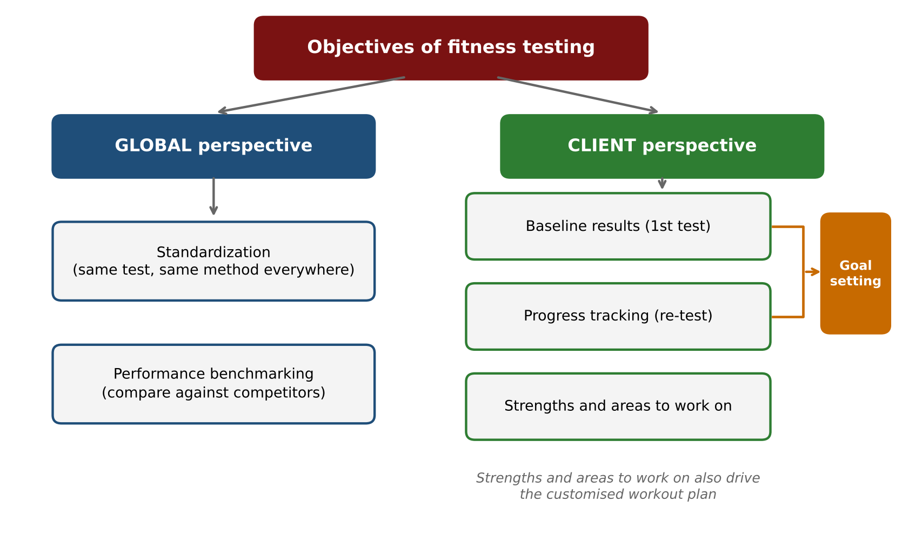
2.1 Global perspective
Standardisation. Because the tests use the same procedure and method everywhere, a given component is tested the same way all over the world. For example, muscular strength is not tested with a lat pull down in Mumbai, a shoulder press in Tokyo and a bench press in France. One of the worldwide tests of muscular strength is the bench press, and nobody may invent a different method. (The strength tests themselves are covered in Fitness Testing 2.)
Standardisation allows comparison: athletes or bodybuilders of one country can be compared with those of another on the same parameter.
Performance benchmarking. Suppose a country's athletes will take part in a global tournament. Unless it is known where the competition stands (for example South African athletes here, New Zealand there, the USA elsewhere), there is no milestone or benchmark to aim for. Benchmarking shows how far a team lags, or how far ahead it is. Being ahead is also useful information, because then the standard has to be maintained. From a global point of view, fitness testing is all about performance benchmarking made possible by standardised methods.
2.2 Client perspective
If fitness testing helps the client, it also helps the trainer. A client who enjoys the benefits stays, renews training and becomes a brand advocate (tells others about the trainer).
1. Baseline results (the first test). The trainer knows nothing about a new client. Testing all five components gives the baseline that shows where the client stands today.
2. Progress tracking (the re-test). Only with baseline numbers can progress be tracked. After, say, 3 months of training a re-test shows how far the client has come. The trainer can show the client: "this is where you started and this is where we have brought you". This builds confidence and motivation, because numbers speak louder than words. It also shows that the trainer is number-driven and goal-oriented, not someone making vague promises such as "give me one year, I will do magic".
3. Goal setting. Baseline results (first test) and re-test results together support goal setting. Without baseline results goals would be set randomly. After a re-test the goals can be tweaked depending on whether the plan is working. Instead of vaguely saying "one year, two years", the trainer sets short-term, mid-term and long-term goals (actual milestones, for example at 3 months and 6 months). This keeps the client consistent and driven. When clients meet these goals they look up to the trainer and may ask for the bar to be set higher.
4. Strengths and areas to work on. The baseline shows what the client is good at and what needs work, which lets the trainer design a customised and suitable workout plan.
- Wording matters. Fitness is a service industry, so the word "weakness" is avoided. Use strengths and areas to work on. A client meeting the trainer for the first time may react badly to a list of "weaknesses".
- "Strength" here does not mean only muscular strength. It is the ordinary English word and can come from any of the five components.
Analogy: the debate competition. A school girl takes part in a debate and her teacher gives feedback afterwards. The weaknesses mentioned are pronunciation of certain words and grammar. The strength is good voice modulation (the line "what are the objectives of fitness testing" did not sound like a robot, which made it impactful). Strengths can lie in any field.
Using strengths. A client with very good cardiorespiratory endurance can be helped to maximise that potential and even build a career from it. A client with very good upper body muscular strength can be given more advanced upper body exercises and helped to nail those lifts.
Using areas to work on.
- A client with poor flexibility (flexibility has its own tests) gets a balanced plan in which not a single day passes without stretching: mobility drills as well as static stretching.
- A client with a contraindication can be protected. A contraindication is any movement that causes discomfort or pain (the word is often used by physiotherapists). It may be in the upper limb, lower limb or back, for example raising the hand with the elbow bent. If a particular machine or exercise bothers the client, it can hinder performance, so an alternative is chosen. This avoids the risk of injury.
Fitness testing is therefore a powerful tool for designing the most suitable workout plan.
Part 3: Health Screening Before Fitness Testing
3.1 What is screening?
Before the correct order of tests is discussed, there is a pre-step that takes place even before fitness testing: health screening.
The class was asked what "screening" means. Answers included checking records, a health check and filtering. The simplest way to understand it is baggage screening at airports, metro stations and hotels, or X-ray screening. Screening means scanning something. Security personnel scan everybody's luggage so that people in a public area are safe and nothing dangerous is found. In the same way, health screening makes sure that the person whose fitness test is about to be conducted is safe and sound and that no problem will occur during the test.
The course slides define it as: a procedure performed on asymptomatic populations to assess the likelihood of a particular disease.
Health screening does not require inviting a doctor to the gym. It uses two simple forms. The trainer reads the form to the client (or the client reads it), the client fills it in and signs it. The two forms are the PAR-Q and the informed consent form. Sample copies of both are in the course slides and can be printed and used later, for example if a gym has no such process (introducing one is usually welcomed). The forms are also a requirement of the international registration body, so trainers must be aware of them.
3.2 PAR-Q
PAR-Q stands for Physical Activity Readiness Questionnaire. It is a set of about 10 questions (the sample in the slides has 10) about the client's medical background: for example heart-related conditions, joint-related conditions and neurological disorders such as epilepsy.
The questions are close-ended: next to each there are only two options, Yes or No, and the client selects one. There are no lines for writing an essay about a past problem.
Clearance rule. The PAR-Q is considered cleared, and the fitness test can be conducted, only when all answers are No. A single Yes is a signal to stop and ask the client about it. To be sure the client is still eligible for fitness testing, the client must bring a NOC (no objection certificate) from their doctor.
Why documentation matters. Today a client may blame the trainer and threaten legal action very quickly. Getting everything documented and signed before the journey starts means nobody can hold the trainer responsible later. The more detailed the form, the better.
The sample PAR-Q in the slides (ages 15 to 69) contains these questions, each answered Yes or No:
| No. | Question (summary) |
|---|---|
| 1 | Has your doctor ever said you have a heart condition and that you should only do physical activity recommended by a doctor? |
| 2 | Is there any history of heart disease in your family? |
| 3 | Do you feel pain in your chest when you do physical activity or exercise? |
| 4 | In the past month, have you had chest pain when you were not doing physical activity? |
| 5 | Do you lose your balance because of dizziness, or do you ever lose consciousness? |
| 6 | Do you have a bone or joint problem (for example back, knee or hip) that could be made worse by a change in your physical activity? (If yes, give details.) |
| 7 | Do you suffer from asthma, diabetes, epilepsy or high blood pressure? (If yes, give details.) |
| 8 | Do you have any other medical or physical condition (such as diabetes, cancer, osteoporosis)? |
| 9 | Do you have any current injuries or conditions, and if so, are they being treated by a doctor or other health professional such as a physiotherapist? |
| 10 | Do you know of any other reason why you should not do physical activity or exercise? |
The form ends with a note: if you answered YES to any question, check with a member of staff before taking part, because you may need to be referred to your doctor first.
3.3 Informed consent
The word informed means there is a script that the client reads, or that the trainer reads aloud. It informs the client about:
- the kind of machines that will be used,
- the exercises and activities (strength training, cardio, stretching and so on),
- the possible risks involved.
This form is not only for fitness testing. It covers the overall fitness journey, because a client who has signed up is tested first and then the journey begins.
Consent is the closing statement in which the client says they are fully aware of everything and willingly agree to take part in the fitness journey or fitness test, followed by the signature. It is a win-win: the client is aware and the trainer is protected.
The sample consent form in the slides includes statements that the programme includes exercises to build the cardiorespiratory system (heart and lungs) and the musculoskeletal system (muscles, joints and bones) and to improve body composition. Exercise may include treadmill, running, walking, bike, rowing, group aerobic exercises, weight training and exercises for mobility and flexibility. The client confirms that it is their responsibility to inform the trainer of any health problems, injuries or pregnancy, to obtain written medical clearance if required, to monitor their own condition and stop and inform the trainer if unusual symptoms occur, and that they have read the form and their questions have been answered.
Student question: "In every gym, consent forms are mandatory, aren't they?"
A: If a gym already has its own format, follow it. Some gyms do not like changes to their standard process, and there is no need to go against the system. Where nothing exists, a trainer can introduce one. It will be seen as a positive step, working for the organisation and not only for oneself.
Once these two formalities are done, fitness testing can begin.
Part 4: The Correct Order of Fitness Testing
4.1 Why order matters
There are five components and several tests for each. The question is which component's tests come first and which last, so that the results are valid and reliable.

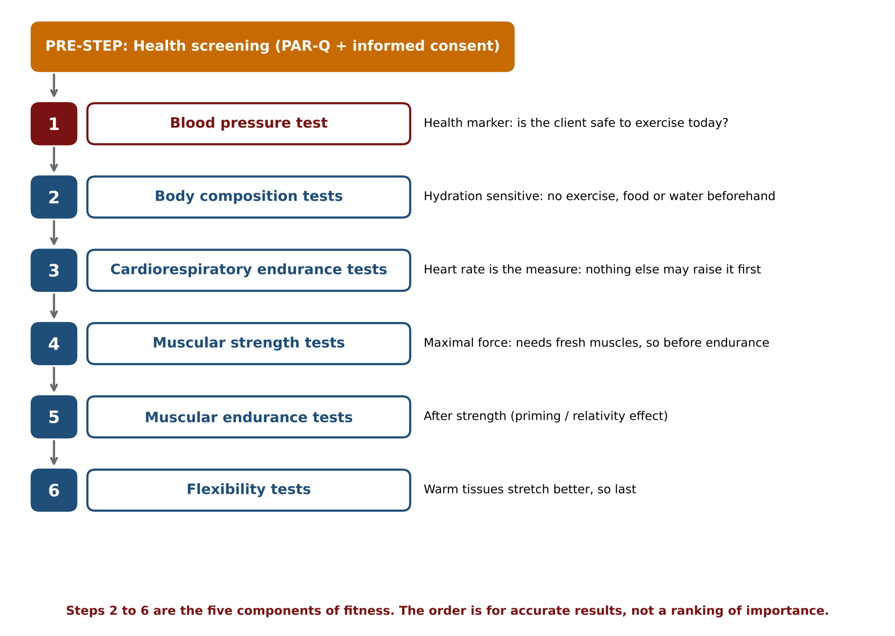
| Step | Test | Why it sits here |
|---|---|---|
| Pre-step | Health screening (PAR-Q and informed consent) | Safety and legal protection before anything else |
| 1 | Blood pressure test | Health marker for the day of testing |
| 2 | Body composition tests | Needs a neutral, unchanged body state |
| 3 | Cardiorespiratory endurance tests | Heart rate must rise only because of the cardio task |
| 4 | Muscular strength tests | Maximal force needs fresh muscles |
| 5 | Muscular endurance tests | Easier after the strength test (priming effect) |
| 6 | Flexibility tests | Warm tissues lengthen better |
Steps 2 to 6 are the five components of fitness. Step 1 is an additional health marker test. The numbers 1 to 6 are an order, not a rank: blood pressure is not "most important" and flexibility is not "least important". All components are equally important (see the interdependence of components in the Intro to Fitness lecture). The order simply gives the most accurate results for all tests.
4.2 Step 1: blood pressure comes first
The PAR-Q and consent form describe the client's medical background over the last 3 or 6 months. The client's condition on the day of testing (especially the very first time) also has to be checked, because nothing is known about the client. A blood pressure test shows whether the client is ready to be taken through the tests today.
If BP is already elevated or high and the client has not mentioned any such history, physical activity during the tests could push it up further, and things could go out of control. It must therefore be normal at the start.
If BP is elevated or high on the day:
- Make the client sit down in a calm, relaxed environment and offer water.
- Check again after some time. If it is back to normal, begin.
- If it stays high, avoid the fitness test that day. Try on the second day and the third day.
- If BP is high on all three days, it can indicate a high blood pressure condition, and the client should be told to see a doctor if they have not already.
Three days are used because one high reading may be due to a stressful day, physical activity before coming to the gym, or some other factor. The aim is to be certain that the day on which testing is done is a normal day.
4.3 Step 2: body composition second
Body composition is defined as the ratio of body fat and lean body mass (answered by the class). Body weight can be divided into two main parts:

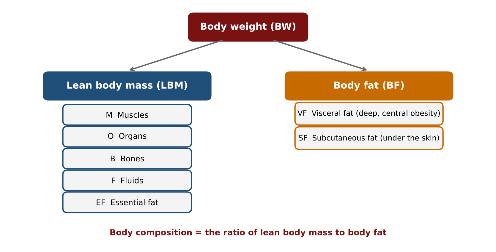
Lean body mass (LBM): Muscles, Organs, Bones, Fluids and Essential Fat (memory aid M, O, B, F, EF). Body fat (BF): visceral fat (VF) and subcutaneous fat (SF).
Why first? Body weight changes before and after a workout, because physical activity causes metabolic changes: sweating causes fluid loss and salt depletion. To test body composition in the most accurate and reliable way, the test must be done when everything is neutral and nothing in the body has changed. That is why, for the popular BIA machine, people are told to do the test first thing in the morning before eating or drinking anything. Body composition tests are therefore conducted before any other test.
4.4 Step 3: cardiorespiratory endurance third
In the cardio lectures the key factor was the heart rate (just as RM is the key factor in weight training). In both cardiorespiratory endurance tests, heart rate is monitored.
Reasoning. Suppose a client does 10 body weight squats, 10 push-ups and then 10 minutes of jogging, and the heart rate is then found to be 132 (a hypothetical number). There is no way to say how much of that heart rate comes from the jogging, because squats and push-ups also raise it. The increase should be solely the contribution of the cardio task. Muscular strength and muscular endurance tests would raise heart rate, and so would flexibility (stretching). So the cardiorespiratory endurance test is done before all of them, to get the most accurate result.
4.5 Steps 4 and 5: strength before endurance (class vote)
The class was asked to vote on whether muscular strength or muscular endurance comes first. The majority said strength first, which is correct. (When this vote is held, many people say endurance first.)
Definitions recalled.
- Muscular strength: the ability of the working skeletal muscles to contract and generate maximum force in one single effort.
- Muscular endurance: the ability of the working skeletal muscles to contract submaximally for a long period of time without getting fatigued.
Reason 1: fatigue. Take the pectoralis major. A bench press (a 1 RM style test) tests strength and push-ups test endurance. If push-ups are done first, the muscle is fatigued, and it would then be expected to generate maximum force, which is unfair. The muscle must be fresh so that it can contract and generate maximal force.
Reason 2: the priming or relativity effect (it helps endurance too). Imagine sitting in a car at 100 km/h, which feels very fast on Indian roads. Later you sit in a car (say a Lamborghini) at 200 km/h, double the speed. When that car comes back down to 100 km/h, 100 km/h no longer feels as fast, because you are coming down from 200. In the same way, a muscle that has gone through a 1 RM test (maximum force in a single effort, the "200 km/h" test) finds the endurance test (the "100 km/h" push-ups) less challenging. A client who could do X push-ups when push-ups come first might do more than X when push-ups follow the strength test. So both tests benefit from this order.
4.6 Step 6: flexibility last
Flexibility and mobility go hand in hand, and the factors that affect mobility affect flexibility too. One of those factors is tissue temperature (from the stretching lecture): warmer tissues extend better, and colder tissues are stiffer.
Flexibility is the ability of the soft tissues to lengthen passively, so flexibility tests involve stretching the muscles. If flexibility were tested at position 1, 2 or 3, no physical activity would have been done yet and the tissues would be cold. After steps 3, 4 and 5 the tissues are warm and lengthen better. So flexibility is tested last, to expect the best possible results.
Analogy: making tea. If a host puts ginger and cardamom in the utensil first, roasts them, then adds tea, and only at the end adds water and milk, the tea will not turn out right (guests would end up ordering tea from outside). Even a simple routine activity needs the correct order for a successful result, and so does fitness testing.
Student question: Do we have to test mobility too?
A: Flexibility and mobility go hand in hand. Mobility is the ability of joints to move freely and actively through a full range of motion without discomfort. Some flexibility tests check the range of motion at a joint, so mobility is tested side by side. It is not listed separately only because there is no component named mobility; the tests are named after flexibility.
Part 5: Test 1, Blood Pressure
5.1 Reading a BP report
A BP reading looks like 115/75 mmHg. In everyday language these are called the "upper one" and the "lower one". The professional terms are:

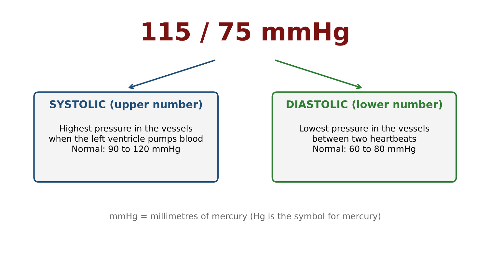
- Systolic BP (the upper, larger number): when the heart beats and the left ventricle pumps blood into the vessels, the pressure in the vessels is highest. This is the systolic pressure.
- Diastolic BP (the lower, smaller number): in the gap between two heartbeats the pressure falls. The lowest pressure in the vessels is the diastolic pressure.
Normal ranges: systolic 90 to 120 mmHg and diastolic 60 to 80 mmHg. mmHg is the unit: millimetres of mercury (Hg is the symbol for mercury). A reading of 115/75 lies in both normal ranges, so it is normal BP. (Many animation videos show systolic and diastolic clearly.)
5.2 The measuring device
Older manual equipment, still used by some nurses and doctors, has a balloon that is pumped, a tube connected to a cuff that inflates, and a rectangular meter containing mercury that rises and falls (a sphygmomanometer). The person testing also uses a stethoscope to hear the pulse sounds.
No such skill is needed here. A simple automatic digital machine is used (for example the Omron brand, which is quite reliable). The tube from the cuff is plugged into the monitor, the cuff is wrapped on the upper arm, and the start button is pressed. The machine does everything. The display shows SYS (systolic), DIA (diastolic) and also the pulse rate per minute. After pressing start a mild sound and vibration indicate that the cuff has started inflating by itself.
5.3 Seven-step procedure
| Step | Instruction |
|---|---|
| 1 | Plug the tube end into the device |
| 2 | Tie the cuff on the upper arm with both the tube and the arm (palm) facing up |
| 3 | Position the cuff edge 2 to 3 cm above the elbow so that it does not cover the elbow joint |
| 4 | The cuff should be snug but not too tight: two fingers should fit under it |
| 5 | The tube should pass along the medial side of the arm (not anterior, not lateral) |
| 6 | The cuff should be at the same height as the heart (use a table or armrest) |
| 7 | Correct posture: legs not crossed, feet flat on the floor, back supported; no talking and no stress, by the client and by the tester |
5.4 Blood pressure classification
After the numbers are ready they are checked against a chart, like the test norm sheets for most upcoming tests.
| Blood pressure category | Systolic mmHg (upper number) | Diastolic mmHg (lower number) | |
|---|---|---|---|
| Low blood pressure (hypotension) | Less than 90 | Or | Less than 60 |
| Normal | 90 to 120 | And | 60 to 80 |
| Elevated | 120 to 129 | And | Less than 80 |
| High blood pressure (hypertension stage 1) | 130 to 139 | Or | 80 to 89 |
| High blood pressure (hypertension stage 2) | 140 or higher | Or | 90 or higher |
| Hypertensive crisis (consult a doctor immediately) | 180 or higher | And/or | Higher than 120 |
Language. "Hypo" means less (hypotension is low BP), "hyper" means excessive (hypertension is high BP).
Applying the chart. 115/75 falls in both normal ranges, so it is normal. If either the systolic is below 90 or the diastolic is below 60, it is low BP. At 140 or higher (systolic) or 90 or higher (diastolic) it is high blood pressure stage 2.
Safety link. If the client already had hypertension stage 1 and a physical activity pushed BP further to stage 2 or a hypertensive crisis, it could be very risky. This is why BP is a health marker checked first.
Part 6: Body Composition Tests, Overview
Body composition has eight tests that are grouped into three categories. This makes it the longest component of fitness testing (it may be started in one lecture and finished in the next).

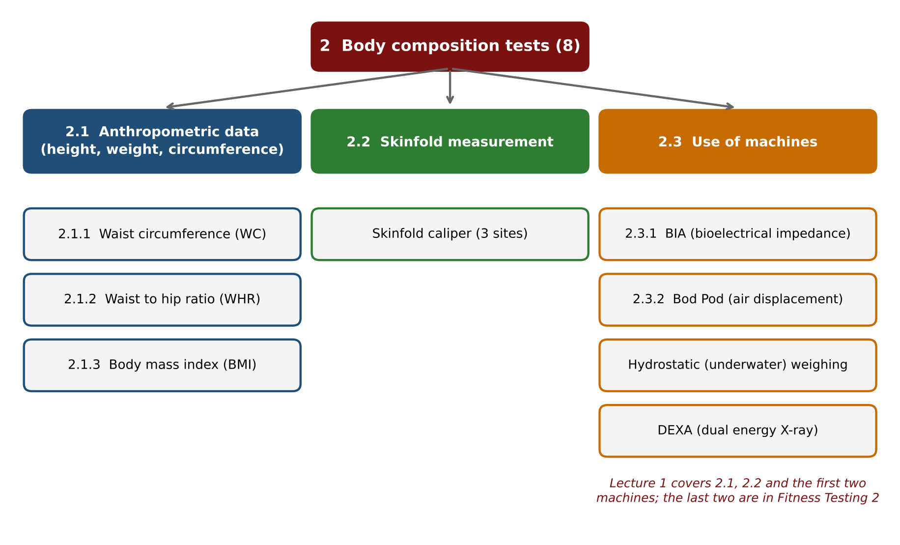
| Category | Tests | Machine needed? |
|---|---|---|
| 2.1 Anthropometric data | Waist circumference (WC), waist to hip ratio (WHR), body mass index (BMI) | No |
| 2.2 Skinfold measurement | Skinfold caliper test (3 sites) | No (a small hand device) |
| 2.3 Use of machines | BIA, hydrostatic (underwater) weighing, Bod Pod (air displacement), DEXA (dual energy X-ray absorptiometry) | Yes |
The goal is to be aware of all eight tests, not to conduct all of them. After the pros and cons of each have been discussed (finishing in Fitness Testing 2), the most suitable test will be chosen.
Numbering system. The number 2 stands for the second type of fitness test (body composition). Under it, 2.1 is the first category (anthropometric data), 2.1.1 to 2.1.3 are its tests, 2.2 is skinfold measurement and 2.3 is use of machines (2.3.1 BIA, 2.3.2 Bod Pod). This makes it easy to remember which test belongs to which category.
Pattern followed for each test: objective, procedure (site or steps), norms or results, then advantages and disadvantages.
Part 7: 2.1 Anthropometric Data
7.1 What is anthropometry?
Anthropo means the human body and metric refers to measurements and proportions. Anthropometry is the scientific study of the measurements and proportions of the human body, and anthropometric data are the numbers collected in this study.
Three key measurements are taken:
- Height, measured with a stadiometer. The person stands bare feet on a small platform connected to a pole, with the hips, shoulder blades and head aligned to the pole. A headboard is lowered to touch the crown of the head. The pole carries a scale in feet, inches and centimetres, from which the reading is taken.
- Weight, measured with a weighing scale.
- Circumference, the length of the boundary of something, measured with a tape (the same kind a tailor uses for chest, shoulder and lengths).
Slide guidelines (height and weight).
- Height: explain the procedure, remove shoes, stand tall and straight with shoulders relaxed, hands at the sides, thighs together and feet flat and slightly apart. Heels, buttocks and shoulder blades should touch the surface of the measuring board. Lower the headboard until it firmly touches the crown of the head. Record height to the nearest quarter inch or cm, rounding up or down.
- Weight: explain the procedure, remove shoes, stand in the centre of the scale, stand still with even weight on both feet and arms hanging freely at the sides, and record the weight shown.
Some tests use only circumference, others use height and weight. The three tests of this category are WC, WHR and BMI.
7.2 Objectives of the three tests
| Test | Objective |
|---|---|
| 2.1.1 Waist circumference (WC) | Tells whether there is a health risk due to visceral fat (central obesity) |
| 2.1.2 Waist to hip ratio (WHR) | Tells whether there is an overall health risk |
| 2.1.3 Body mass index (BMI) | Places the person in a category: underweight, normal weight, overweight or obese |
Visceral fat is the deep fat towards the centre, away from the surface, which is why it is also called central obesity. Subcutaneous fat lies towards the skin surface.
Important: WC only says whether the risk is high or low. It does not give a visceral fat percentage. WHR is not specific to visceral fat; it gives the general overall health risk.
7.3 2.1.1 Waist circumference (WC test)
Site. Place the measuring tape across the iliac crest (the highest point of the ilium, which can be felt by standing and touching it). Across the iliac crest the tape also passes through the belly button, and this is the widest part of the waist.
Touch and consent. A test with physical touch needs permission, whatever the gender. If the client is comfortable, the trainer takes the measurement. If not, the trainer shows the position on their own body and the client places the tape on themselves, and the trainer notes the reading on the tape.
Language with clients. Avoid jargon. A client told "put it across your iliac crest" will ask "where?". Say instead "the widest part of your waist", which automatically falls across the iliac crest.
Normal values (for Indians, and applicable to Asians overall). These differ for males and females, and are defined as low health risk.
| Low health risk (normal) | |
|---|---|
| Males | WC less than 35.5 inches (90 cm) |
| Females | WC less than 31.5 inches (80 cm) |
The tape has inches on one side and centimetres on the other. These values were not set by the course. They were tried, tested and suggested by research bodies and international bodies.
The slides summarise it as: measures risk due to central obesity or visceral fat (risk for lifestyle disorders), with the same Asian values, and a diagram of the iliac crest, visceral fat, abdominal muscles and subcutaneous fat. Their guidelines say to demonstrate to the subject, have them stand upright and relaxed, wind the tape around the greatest anterior extension of the abdomen (usually at the level of the umbilicus and directly above the iliac crest), ask whether the subject wants to be measured or measure themselves, and record the measurement.
7.4 2.1.2 Waist to hip ratio (WHR test)
Formula. The ratio of waist circumference to hip circumference:
WHR = WC / HC
Both measurements must be in the same unit (inches with inches, or cm with cm; never mix them).
Sites. The waist site here is different from the WC test above, even though the same letters "WC" are used.
| Measurement | Site | Plain wording for clients |
|---|---|---|
| Waist (WC) for WHR | The narrowest part of the waist: the midpoint between the last rib and the iliac crest | "Narrow part of the waist" |
| Hip (HC) | The widest hip area (the slides: maximum circumference of the buttocks) | "Widest part of the hips" |
There is no narrow or wide choice for the hips and no special medical term, just the widest hip area.
Normal values (low health risk).
| WHR | |
|---|---|
| Males | Less than 0.95 |
| Females | Less than 0.86 |
Worked case study. A male client's narrowest waist is 36 inches and his hip is 40 inches (inches for both).
WHR = 36 / 40 = 0.90
For a male the limit is 0.95, so 0.90 is below it: low overall health risk.
Using the same numbers for a female (the slides use a female for this case): the limit is 0.86 and 0.90 is bigger than 0.86, so the result is high overall health risk. The same number gives different results for the two sexes.

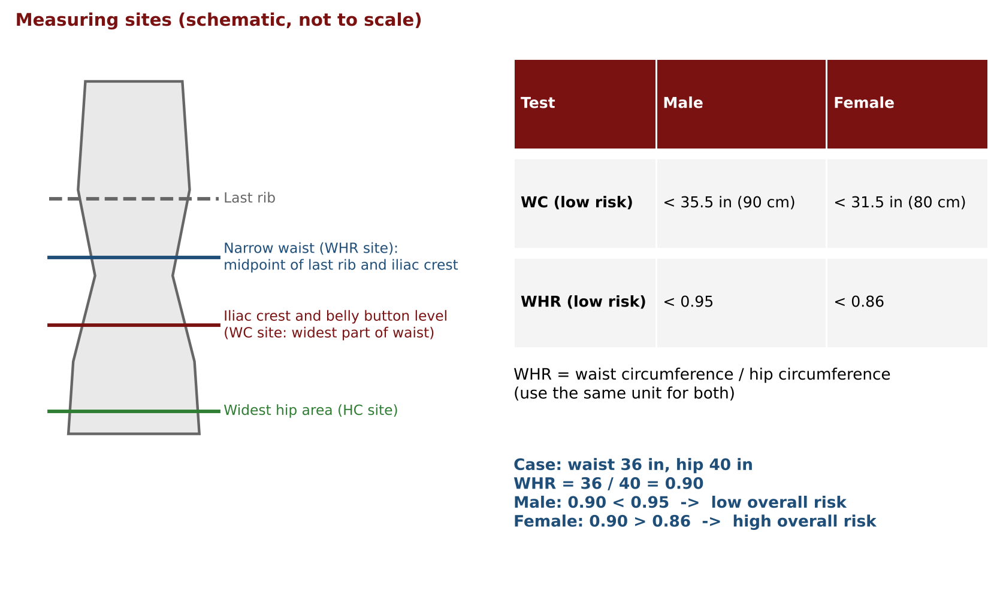
7.5 2.1.3 Body mass index (BMI test)
The first two tests use only circumference. BMI uses the other two anthropometric measurements, weight and height, through a formula.
Formula.
BMI = body weight (kg) / [height (m)]²
The unit of BMI is kg/m². Squaring means multiplying a number by itself once (2² = 2 x 2, 3² = 3 x 3 = 9), so the height in metres is multiplied by itself. Online BMI calculators exist, but a trainer should know the formula and calculation (for example when asked in an interview).
Converting height to metres. Heights usually come in a mixed form such as 5 ft 8 in.
- Make it a single unit (inches): 1 ft = 12 in, so 5 ft = 5 x 12 = 60 in. Then 60 + 8 = 68 in.
- Multiply the inches by the constant 0.0254 to get metres: 68 x 0.0254 = 1.7272 m.
Worked example (as done on the board). Body weight 90 kg, height 5 ft 8 in. The height was taken as 1.7 m, then 1.7 x 1.7 = 2.89, written as 2.9:
BMI = 90 / 2.9 = 31.03 kg/m² (written 31.02 and 31.03 on the board)
(Using the exact 1.7272 m gives about 30.17. See the points to confirm; the category is the same either way.)

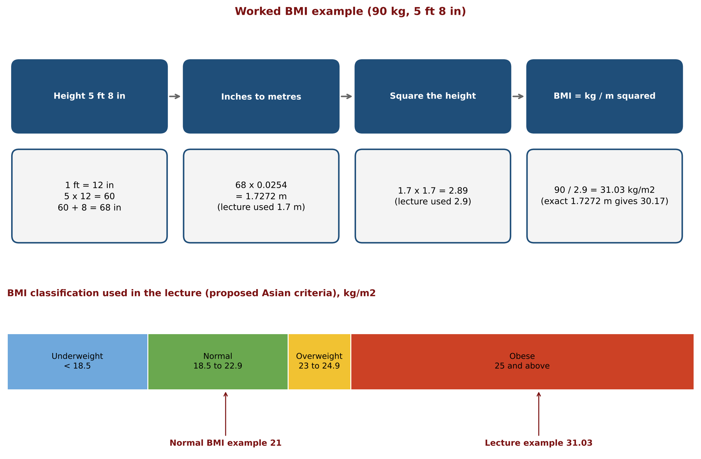
BMI classification (proposed Asian criteria, as in the slides). The slide chart is adapted from The Lancet 2004;363:157-63.
| Category | BMI (kg/m²) |
|---|---|
| Underweight | Less than 18.5 |
| Normal range | 18.5 to 22.9 |
| Overweight | 23 to 24.9 |
| Obese | 25 and above (the slide prints "> 25") |
At 31, the example client is placed in obese.
Shortcomings of BMI
The lecture stressed that BMI should not be relied on as accurate, because of loopholes:

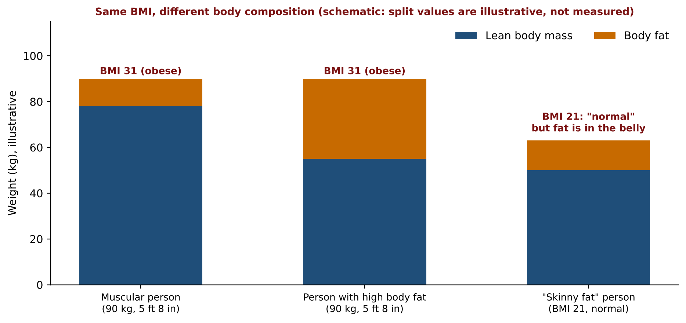
1. It does not differentiate body fat from lean body mass. Suppose a client's details (90 kg and 5 ft 8 in) arrive on WhatsApp or from the gym manager before the first meeting, and the trainer calculates BMI as homework and concludes that he is obese. At the first meeting the client turns out to be a muscular person. The trainer would feel awkward saying "I thought you were obese as per your BMI". Two people of the same height and weight (the slide shows a bodybuilder and an obese person on the same scale, both 90 kg) can have very different compositions, because weight comprises both lean body mass and body fat. People with the same weight cannot be assumed to have the same body composition.
2. "Skinny fat". Suppose the data gave a BMI of 21, which is normal. The client may actually be skinny fat: the upper and lower limbs are lean (no visible fat) but there is adiposity in the belly region. Calling this person normal is also incorrect, because BMI does not count body fat; it only looks at weight and height.
What the three anthropometric tests cannot do
None of the three tests gives an actual body fat percentage. The ideal body fat levels (from the body composition lecture and the slides) are less than 15% for males and less than 20% for females, so a percentage number is needed to judge ideal body composition. The slides illustrate these levels with figures from 45% down to 15% for females and 35% down to 8% for males.
The three tests are not discarded or degraded. They are used, but only as short-term or mid-term goals for the client (for example: "as per the WC test you are 2 inches above the normal value, so your short-term goal is to get below it so there is no health risk"). They cannot be relied on for body composition. The search for a percentage continues with the next tests.
Part 8: 2.2 Skinfold Measurement
8.1 The test
There is only one test in this category: the skinfold test, using a skinfold caliper. The caliper looks like the compass used to draw circles: it has two arms with a pointed surface at the end of each. The trainer pinches and holds the skin to make a skin fold and uses the caliper to measure the thickness of that fold.
The slides show the steps: pinch the skinfold between the fingers, then place the caliper on the skinfold to measure the fat percentage. Calipers come in several designs (four types are shown), but the process is the same.
What it measures and the principle. A pinch of skin and fat measures the subcutaneous fat (not the deep, internal fat). The principle: the higher the subcutaneous fat, the higher the body fat percentage.
8.2 Sites (3 sites each for women and men)
| Women | Men | |
|---|---|---|
| Site 1 | Triceps fold | Chest: midpoint between the top of the armpit and the nipple |
| Site 2 | Suprailiac fold: supra means superior, iliac refers to the iliac crest, so the fold just above the iliac crest on the waistline | Abdomen: 1 inch from the belly button (left or right, anywhere) |
| Site 3 | Mid thigh | Mid thigh |
The mid thigh is the one site common to both sexes.
8.3 Advantages and disadvantages
| Advantages | Disadvantages |
|---|---|
| Portable: small and handy, fits in a bag or a deep jacket pocket | Measures only subcutaneous fat (no visceral fat), so it does not tell how much is subcutaneous and how much is visceral; it cannot be relied on alone |
| Easy to use: once the three sites for each sex are known, there is no rocket science | High standard error of plus or minus 3% |
| Time saving: it takes only a few seconds | Not suitable for the very obese or the very lean |
| Pinching discomfort: not everyone is comfortable being pinched |
Standard error explained. Calipers range in price from about Rs 300 to Rs 5,000, and more spending may give better accuracy, but the method itself is still not considered fully accurate, even for an expensive one, because accuracy comes from the type of test and the steps taken, not from the price. Accuracy of any test is compared with the gold standard. If the gold standard says a person has 20% body fat, the caliper result can fall anywhere from 17% to 23% (plus or minus 3 of that number).

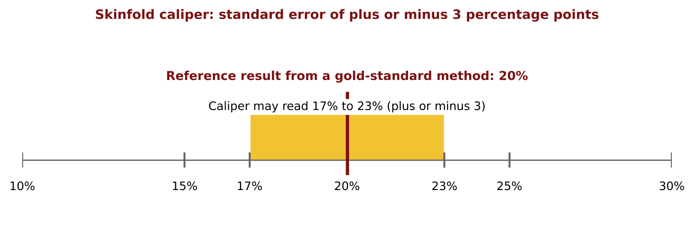
Why not suitable for extremes. A very lean person may have so little fat that no fold can be pinched, so nothing can be measured. A very obese person may have more subcutaneous fat than the maximum opening of the caliper arms.
The slides list the same points: easy to use once the skill is mastered, does not require much time, easy portability; error of plus or minus 3% (compared with underwater weighing), does not differentiate subcutaneous from visceral fat, not ideal for the obese and very lean, and individual preference about being pinched.
From this test onwards, the advantages and disadvantages of each test are noted so that a final choice can be made.
Part 9: 2.3 Use of Machines: the BIA Test (2.3.1)
9.1 What BIA is
The BIA machine is the machine seen in most gyms that looks like a weighing scale: people stand on it and hold a handle connected by a chain or rope at chest level. It is often wrongly called the "BMI machine". It is called that because one of its results is BMI, which it calculates automatically. But the correct name is the BIA machine.
BIA = Bioelectrical Impedance Analysis.
| Part | Meaning |
|---|---|
| Bio | Life, a living organism |
| Electric | Electric current |
| Impedance | Resistance |
| Analysis | Study |
The slides describe it as a test that measures the difficulty level of an electric current moving through the body (resistance to the passage of current in the body).
9.2 Principle
A person stands barefoot. The platform has metal plates (in some machines the whole platform is metallic, in others a plastic platform has a metal footstep). These are electrodes through which a very mild current enters the body. It is not felt as anything more than a mild vibration. The machine analyses how much difficulty the current faces moving through the body: is it resisted and restricted, or does it move smoothly? From this it works out who has more fat and who has more muscle.
Key scientific principle: water is a good conductor of electricity. Water can amplify an electric current (the reason one is told to stay away from open wires near water).
Comparing muscle and fat. From the body composition lecture:
| Muscle cell | Fat cell | |
|---|---|---|
| Water | 75% | 10% |
| Other content | 20% muscle protein (actin, myosin), 4% intramuscular triglyceride (IMTG), 1% glycogen (total 100%) | 90% triglyceride (TG) |
| Effect on the current | Plenty of water, so the current passes smoothly | Little water, so the current is restricted |
A person with more fat mass has more fat cells, hence a smaller proportion of water per cell, so the current faces restriction. A person with more muscle mass has more water in the body, so the current passes smoothly. The machine reads the resistance level and then reports fat mass and muscle mass percentages.

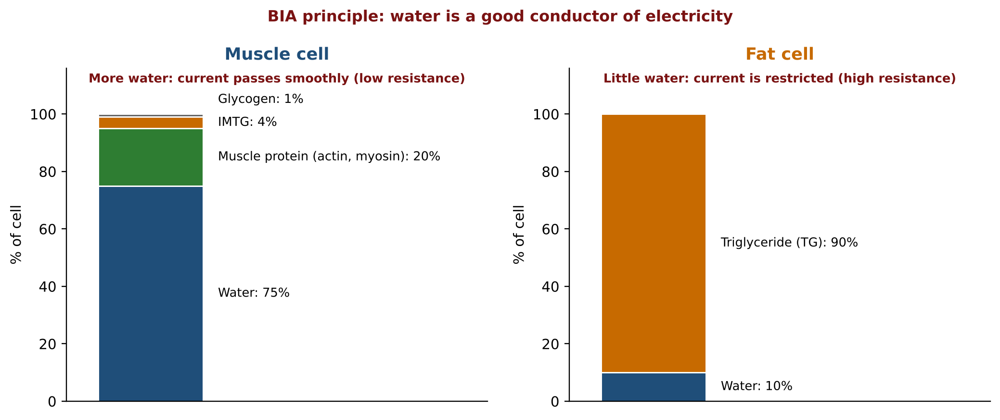
The slides present the same idea: lean body mass has higher water and salts and lesser fat (it conducts, allowing the current to pass faster), while adipose tissue has low water and higher fat content (it insulates, so the current passes slowly).
Compared with earlier tests. The anthropometric tests gave no percentage. Skinfold gave a percentage that was not fully reliable because it ignores visceral fat. BIA considers both visceral and subcutaneous fat and gives a percentage.
9.3 Types of BIA machines

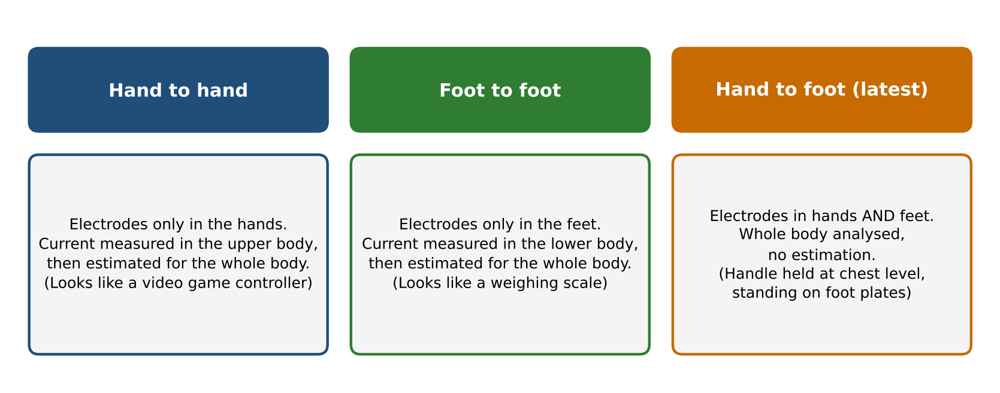
- Foot to foot: looks like a weighing scale. Current enters through the feet only, the machine analyses the lower body and estimates for the full body.
- Hand to hand: looks like a video game controller. Electrodes are only in the hands, so current enters only through the hands, the machine analyses the upper body and estimates for the full body.
- Hand to foot (latest machines): electrodes in the hands and the feet, so there is no estimation and the entire body is analysed.
Price and features. BIA machines come in a wide price range, from about Rs 10,000 up to Rs 45 lakh per machine. High-end machines give segmental analysis: fat mass and muscle mass for the arms, chest, abdomen, thighs and pelvis separately. They also consider extracellular and intracellular water. A popular brand has 3 series, 6 series and 9 series models, with better features in the higher models.
9.4 Demonstration (video)
The video showed the steps:
- The person steps on the scale barefoot. The footprints are the metal electrodes, and the platform is also a weighing scale, so the machine measures weight first.
- The height is entered manually on the screen. The trainer has already measured it with the stadiometer.
- The person holds the hand electrodes, pressing the thumbs against the metal part, and raises the handle slightly to chest level, keeping the arms raised and still.
- The machine runs the test and gives the analysis. Below the weight and height, three results appear: body fat percentage, muscle mass and BMI.
9.5 Prerequisites for a BIA test
The conditions must be met before taking the test. The goal is to stand on the machine with neutral hydration: nothing extra added from outside and nothing lost.

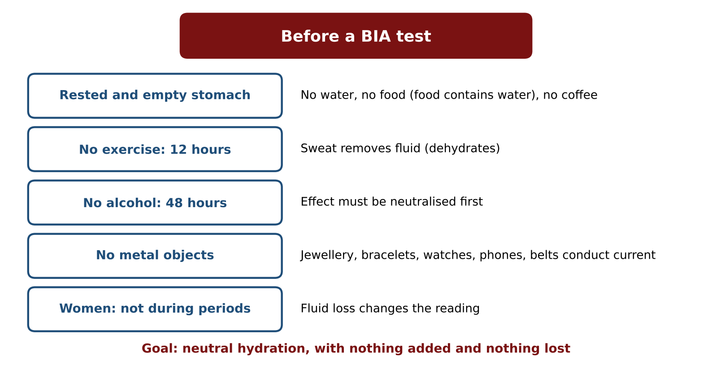
| Prerequisite | Reason |
|---|---|
| Well rested | Basic requirement |
| Empty stomach: no water, no food (food contains water) | Water or fluid taken before the test hydrates the person, which is like cheating. The machine does not ignore it: it counts that water and amplifies the current |
| No coffee | A student asked about black coffee (because getting out of bed is hard). Coffee cannot be had without water, so the answer is no |
| No alcohol, with a gap of 48 hours | The effect needs to be neutralised before the test |
| No exercise before the test, with a gap of 12 hours | Sweating loses fluid, so the person is dehydrated and the machine reads the lower hydration level, which is a loss for the person |
| No metallic objects (ornaments, jewellery, bracelets, watches, gadgets, phones, belts) | Metal conducts electricity, just like water, and can influence the reading |
| Not during periods (women) | Fluid loss during periods influences the results |
Student question: What is the time interval for food (for example 12 hours before)?
A: The preferred condition is an empty stomach along with being well rested. That is why the test is said to be done first thing in the morning: there is then automatically a gap of at least about 6 hours since dinner.
9.6 Advantages and disadvantages
| Advantages | Disadvantages |
|---|---|
| Time saving: hardly a minute | Some models might show standard error. Not every model is meant, but they cannot be as accurate as the gold standard (so not 100% reliable), though still better than the earlier tests |
| Easy to use: even front desk staff at a gym can conduct it if the correct method is followed; no certified trainer, physician or exercise physiologist is needed | Hydration level can impact results: if the person is dehydrated or over-hydrated, the numbers cannot be relied upon, because the whole principle is that water conducts electricity |
| Needs only an electric switch and socket: it is not portable like the caliper, but it is small, easy to move, takes little space and needs no heavy equipment |
9.7 Student questions on BIA
Q: Does the machine show the percentage of muscle and fat, or the actual weight in kilograms?
A: It depends on the model. The screen next to the machine is only a display screen connected to a system on which the entire report appears. A very expensive, high-end model shows a body chart with the body divided into segments, with percentages and kilograms for each segment.
Q: If someone is more hydrated, will the muscle mass show higher?
A: Yes, and that is why the number cannot be relied on in that case. Be careful about hydration.
Q: The price varies from Rs 10,000 to Rs 45 lakh. Does a low-cost machine give more errors, or does a costly one just give more details?
A: Accuracy does not always come with spending. Entry-level or mid-level models may not give features such as in-depth analysis, but the number they give cannot be called totally untrustworthy or completely unreliable.
Using the best test to check a gym's machine. One of the later tests (the final choice, to be revealed in the next lecture) is not conducted in gyms, but it gives very accurate, reliable and worldwide accepted numbers. A client can get that test done once, and then compare the gym's BIA machine (entry level or mid level) against it, to get an idea of how close the machine is and how much standard error it has. A student guessed which test this is (DEXA), and the answer was left for the next lecture.
Part 10: The Bod Pod Test (2.3.2)
10.1 Name and method
Bod Pod: Bod refers to the body, Pod refers to a sealed chamber. The machine is a big egg-shaped chamber. (Similar sleeping pods exist at some airports, where people lie down, a panel closes, and there is soothing music. The Bod Pod has no such music: the person sits in the machine, the door closes, and the test is run.) It is also called the air displacement method.
10.2 Densitometry and the calculation chain
The Bod Pod belongs to the densitometry methods of body composition. There are two tests in this group: the Bod Pod, and another test that comes next lecture. Densitometry uses body density to measure body fat percentage.
Body density = body mass (body weight) / body volume
Once the machine calculates body density, it applies the Siri equation to calculate body fat percentage:
Body fat % = (4.95 / body density - 4.50) x 100
These formulas need not be memorised. The computer does everything, and the technician does not have to do anything. They are explained to show the science behind the machine.

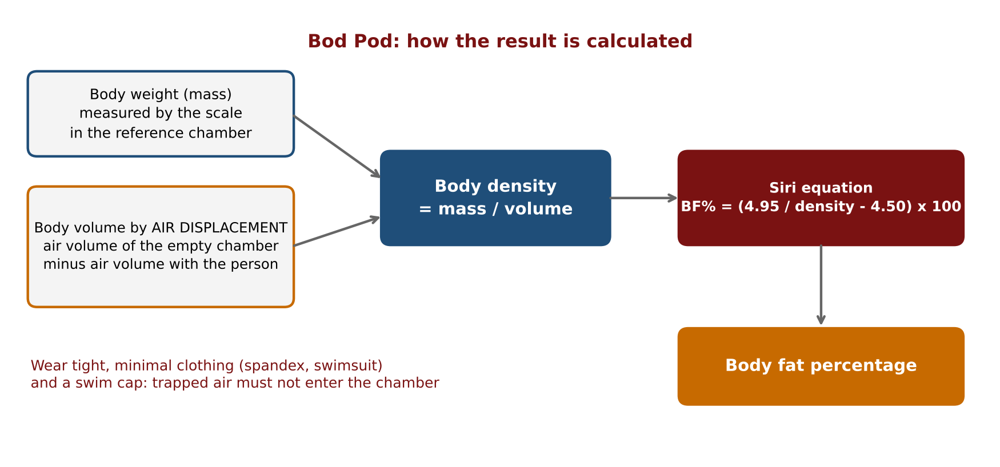
10.3 How the machine works
The slide shows the machine and a cut-away view.
- The part where the person sits is the test chamber. Behind the seat is the reference chamber.
- In the reference chamber there is the grey box, which is the weighing scale that measures body weight.
- A diaphragm behind the backrest measures the volume of air inside the test chamber.
How body volume is found by air displacement.
- Before anyone sits inside, the diaphragm measures the volume of air in the empty chamber and stores it.
- The person sits in the chamber. The person takes up some space, so some air is displaced. The diaphragm measures the volume of air again, and it is different.
- The difference between the two volumes (empty chamber minus chamber with the person) gives the volume of the person.
- Body mass is already known from the scale, so body density is calculated, and then the Siri equation gives body fat percentage.
Student question: When the door opens, the air volume and pressure change. How is that handled?
A: The machine has already stored the volume of the empty chamber. It analyses both air volume and air pressure, and after the door opens, the person sits and the door closes, it compares what the chamber measured earlier with what it measures now. The video also showed a tube into which the person breathes out (a small breathing manoeuvre). It measures the air in the lungs, so the machine can remove that air as well and consider only the person's body volume. Lung volume measurement improves the accuracy of the test.
Clothing. The person wears a swimming costume (spandex or swim shorts for men, a swimsuit for women, body-hugging material) and a tight swimming cap. No extra air must go inside with the person. Ordinary clothes carry air in the shirt and the trouser pockets, and hair has gaps that hold air, so a tight cap is worn.
10.4 Results
In the video the result screen shows body fat percentage and also the masses of fat and fat-free mass. In the example shown, a person's total weight of 97 kg was made up of 82 kg of fat-free mass and 15 kg of fat mass, which can also be expressed as percentages. Fat-free mass is the same as lean body mass (confirmed by a student's question). From these figures the fat percentage is 15 / 97, about 15.5% (calculated for these notes; the recording did not state it).
10.5 Advantages and disadvantages
| Advantages | Disadvantages |
|---|---|
| Accurate: comparable to the gold standard. Note that it is not the gold standard itself, but accuracy is always compared with the gold standard, so it is almost at par | Expensive: not every facility can afford it |
| Time saving | Not available in India (as written on the board); availability is limited |
| No technical expertise needed: the machine does everything | |
| Suitable for all ages and special cases: all ages, patients (heart related, joint related, neurological), obese people, children, very elderly people and hydrophobic people (people afraid of water). It is safe and easy to use |
Why "hydrophobic" is mentioned. The next test, the water displacement method (hydrostatic or underwater weighing), measures body volume with the person submerged in a tub of water. A person afraid of water, a patient, an obese person, a child or a senior citizen may not manage to go underwater and stay there during the test. The Bod Pod, in which the person only sits in a chamber, is safe for them.
The slides add: pretty accurate compared with hydrostatic weighing, easy to operate, short measurement time, well suited to all populations (children, obese, elderly, disabled); disadvantages: expensive and not easily available.
Two key parameters for the final choice. When all tests are compared to pick the best one, affordability and availability will also be considered, along with accuracy. There is no point in a very accurate test that is not available in the country, or that is too expensive for the facility or the client.
Part 11: Wrap-up and Preview of Fitness Testing 2
11.1 Summary of this lecture
| Topic | Key points |
|---|---|
| Objectives | Global: standardisation, performance benchmarking. Client: baseline, progress tracking, goal setting, strengths and areas to work on |
| Pre-step | Health screening with PAR-Q (all No, otherwise NOC) and informed consent |
| Order | BP, body composition, cardiorespiratory endurance, muscular strength, muscular endurance, flexibility |
| BP | Systolic (upper, 90 to 120) and diastolic (lower, 60 to 80); seven-step procedure; classification chart |
| Anthropometric | WC (visceral fat risk), WHR (overall risk), BMI (category); no body fat percentage |
| Skinfold | Caliper, subcutaneous fat, plus or minus 3% |
| BIA | Water conducts current; muscle 75% water, fat 10%; prerequisites |
| Bod Pod | Air displacement, body density, Siri equation |
11.2 Comparison of the body composition tests so far
| Test | Gives % body fat? | Measures | Accuracy | Main advantages | Main disadvantages |
|---|---|---|---|---|---|
| WC | No | Circumference (risk from visceral fat) | Risk only | Simple, no machine | No percentage |
| WHR | No | Circumference ratio (overall risk) | Risk only | Simple, no machine | No percentage |
| BMI | No | Weight and height (category) | Low reliability | Easy formula | Cannot tell fat from muscle, misses skinny fat |
| Skinfold caliper | Yes | Subcutaneous fat | Plus or minus 3% | Portable, easy, quick | No visceral fat, not for very obese or very lean, pinching |
| BIA | Yes | Resistance to current (visceral and subcutaneous) | Some models have standard error | Quick, easy, needs only a socket | Hydration sensitive |
| Bod Pod | Yes | Body volume by air displacement | Comparable to gold standard | Accurate, quick, suits all populations | Expensive, availability |
11.3 What comes next
Two machines remain for body composition: the hydrostatic (water displacement) test and the second remaining machine (the lecture used the numbers 2.3.3 and 2.3.4). Once those are covered in Fitness Testing 2, the best test for body composition will be disclosed (after comparing pros and cons, including cost and availability), and the lectures will move on to the other components.
Points to Confirm
These are places where the recording was unclear or inconsistent, or where it differs from the slides or E-book. The lecture's version is used in the notes.
- BMI worked example numbers. The recording converts 5 ft 8 in to 68 in correctly (the speaker briefly said "5 ft 6" but the board shows 5 ft = 60 in and 68 in). It then multiplies 68 by 0.0254 and says the result is 1.7526, but 68 x 0.0254 = 1.7272 m (1.7526 is the value for 69 in). The board rounds to 1.7 m, squares it to 2.9 (1.7 x 1.7 = 2.89) and gets BMI 31.03 (board 31.02 and 31.03). The slides use 1.72 m, 2.95 and 30.50. With the exact 1.7272 m the BMI is about 30.17. All versions fall in the obese category. These notes show the lecture's calculation and note the exact value.
- BMI categories. The lecture and slides use the proposed Asian criteria (underweight below 18.5, normal 18.5 to 22.9, overweight 23 to 24.9, obese 25 and above). The lecture said "anything more than 25 is obese", and the slide prints "> 25". The E-book (Chapter VII) uses overweight 25 to 29.9 and obese 30 and above. The recording did not give the overweight band, which is taken from the slide.
- Waist circumference thresholds. The lecture and slides give 90 cm (35.5 in) for men and 80 cm (31.5 in) for women for Indians and Asians. The E-book's obesity risk factor table uses waist above 102 cm for men and 88 cm for women (and BMI above 30, WHR above 0.95 for men and 0.86 for women). 35.5 in is 90.2 cm, so 90 cm is an approximation.
- WC measuring site wording. The lecture says across the iliac crest, passing through the belly button (the widest part). The slides say the greatest anterior extension of the abdomen, usually at the level of the umbilicus and directly above the iliac crest. The E-book abdomen site is at the greatest anterior extension, usually at the level of the umbilicus. For WHR the lecture and slides agree (midpoint of the last rib and the iliac crest), and the E-book describes the waist as the narrowest part of the torso.
- WHR case study. The lecture used a male (low risk) and then a female (high risk) with the same numbers; the slide shows only the female case (high risk). Both are consistent. The E-book says WHR risk limits vary with age and sex (for example 0.95 for young men and 0.86 for young women, with higher limits at 60 to 69).
- Skinfold sites. The lecture and slides agree: chest (midpoint between nipple and top of the armpit), abdomen 1 inch from the belly button and mid thigh for men; triceps, suprailiac and mid thigh for women. The E-book describes an abdomen site 2 cm to the right of the umbilicus, a chest fold at one-half the distance between the anterior axillary line and the nipple, and says measurements are taken on the right side of the body.
- What the caliper error is compared with. The lecture says plus or minus 3% compared with the gold standard (without naming it); the slide says compared with underwater weighing; the E-book also gives plus or minus 3%.
- Which test is the "gold standard". The lecture did not name it (a student guessed DEXA and the answer was left for the next lecture). The slides and E-book describe hydrostatic (underwater) weighing as the gold standard in percent body fat measurement. Confirm in Fitness Testing 2.
- PAR-Q length. The lecture said 10 or 12 questions; the slide sample has 10 questions.
- Blood pressure classification boundaries. The slide table has overlapping boundaries (for example 120 appears in both normal and elevated, and 80 as the top of normal diastolic and the start of stage 1). The lecture only stated the normal range (90 to 120, 60 to 80), the low BP rule (systolic below 90 or diastolic below 60) and the stage 2 rule (140 or higher, or 90 or higher). Elevated, stage 1 and crisis values are taken from the slide.
- Three-day blood pressure rule. Repeating the check over three days when BP is high is the lecture's practice and is not in the slides. The E-book instead says to take at least 3 readings and use the average (and to measure supine and standing positions).
- Order of testing. The lecture and slides list six steps (blood pressure, body composition, cardiorespiratory endurance, muscular strength, muscular endurance, flexibility). The E-book lists five (resting measurements such as heart rate and blood pressure, body composition, cardiorespiratory fitness, strength, flexibility) and does not list muscular endurance separately.
- BIA prerequisites. The lecture lists empty stomach (no food, water or coffee), no exercise (12 hours) and no alcohol (48 hours). The E-book says to avoid eating and drinking within 4 hours of the test, avoid exercise within 12 hours, avoid alcohol within 48 hours, void the bladder completely and avoid diuretics. The "at least 6 hours since dinner" figure was given in answer to a student question.
- BIA accuracy. The lecture says some models show standard error and that BIA is better than the previous tests. The E-book gives about plus or minus 3% when done correctly, and says BIA tends to overestimate lean people and underestimate obese people.
- Bod Pod. The lecture calls it time saving, comparable to the gold standard but not the gold standard, expensive, with "not available in India" written on the board. The E-book gives plus or minus 3% error, a validity of r = .93 against hydrostatic weighing, a measurement time of about 5 to 8 minutes, a cost of about 30,000 to 40,000 US dollars and says only a few facilities have it.
- Prices quoted in the lecture. Caliper about Rs 300 to Rs 5,000; BIA machines Rs 10,000 up to Rs 45 lakh. These are approximate, spoken figures.
- Water and composition percentages. Muscle 75% water, 20% protein, 4% IMTG and 1% glycogen; fat 10% water and 90% triglyceride. These come from the earlier body composition lecture and are not on the slides or in the E-book (the slides only say lean mass has more water and salts).
- Brand name unclear. The brand of high-end BIA machines with 3, 6 and 9 series models was not clear in the recording and is not named here.
- Numbering of the remaining machine tests. The lecture numbered BIA 2.3.1 and Bod Pod 2.3.2 and said the other densitometry test would be 2.3.3. The slides list the machines in the order BIA, hydrostatic weighing, Bod Pod, DEXA. The numbers for the last two are therefore not confirmed.
- Bod Pod example. The recording gave 97 kg, 82 kg fat-free mass and 15 kg fat mass but did not state the percentage; 15.5% is calculated in these notes. The Siri equation was spoken as "4.95 divided by body density minus 4.50 into 100" and is written here as (4.95 / density minus 4.50) x 100, which matches the E-book form 495 / density minus 450.
- Ideal body fat levels. Recalled in the lecture as less than 15% for males and less than 20% for females, and matched by the slide.
- Board photos. One board photo (the blood pressure example: 115/75, systolic, diastolic and normal ranges) could not be cleaned properly, so its content is shown as a diagram instead. Photos that only showed slides are rebuilt as tables.
Board Photos from the Lecture

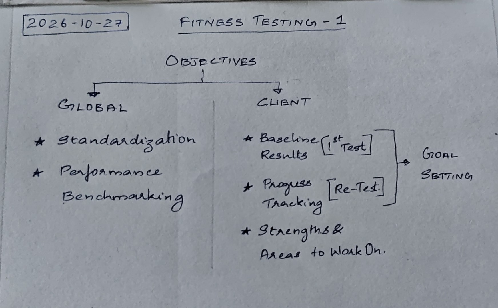

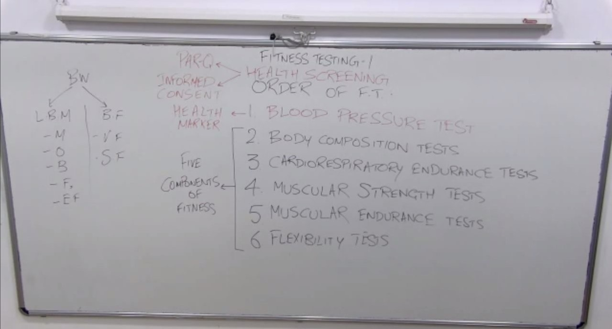

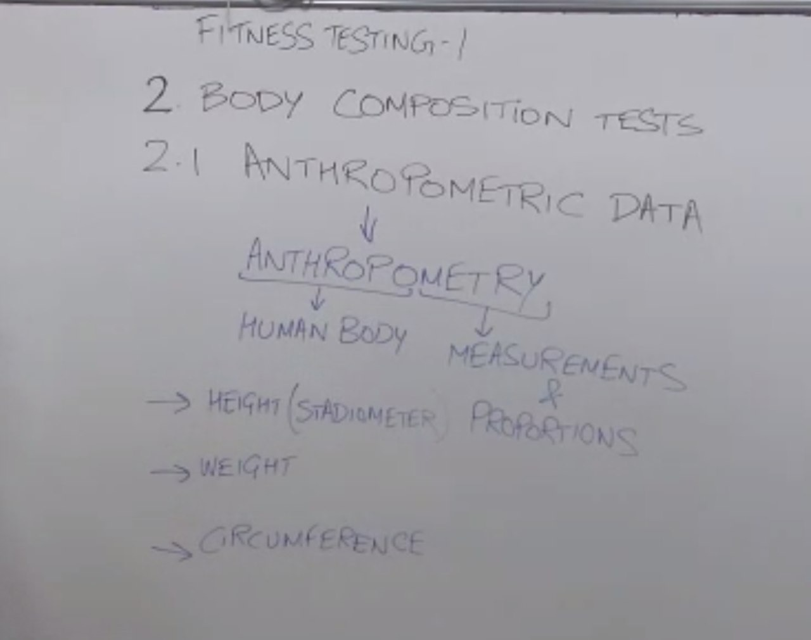

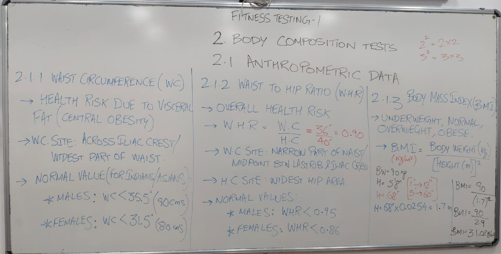

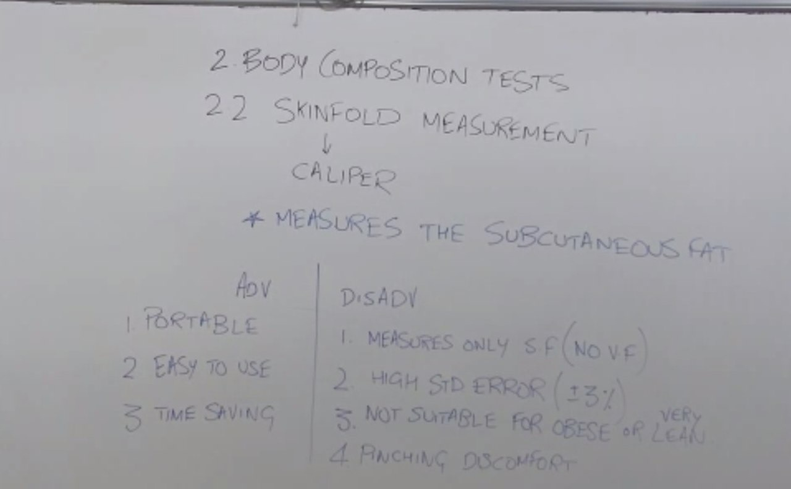

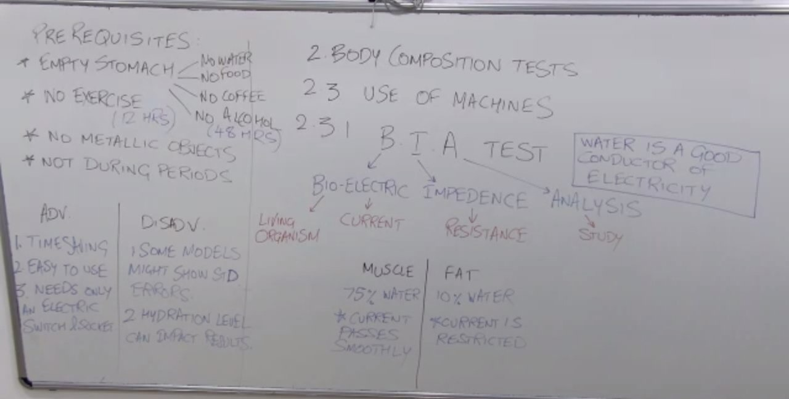

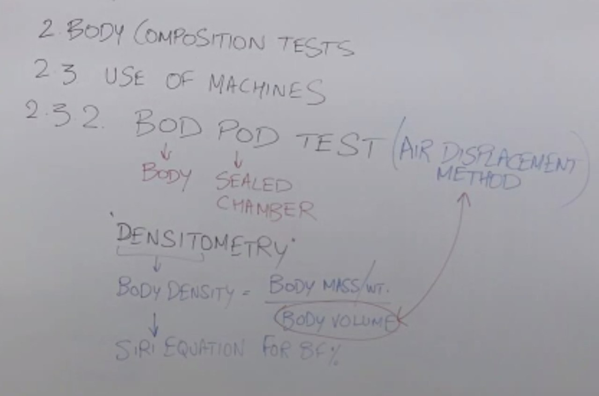

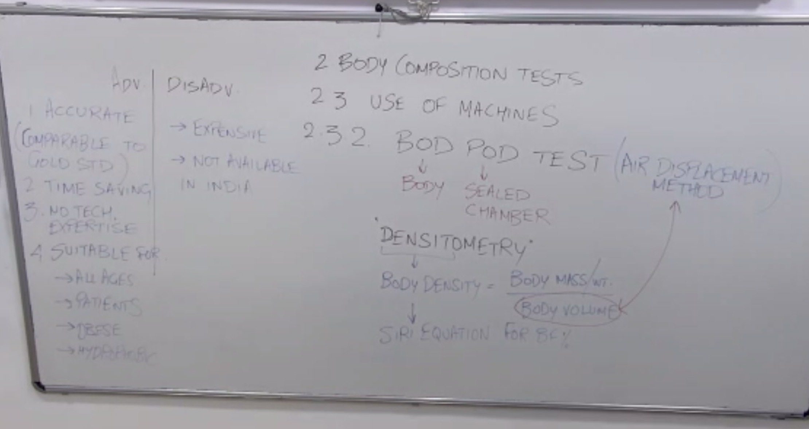